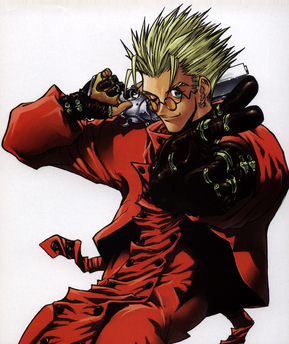

Extensive property damage to various towns; Instigator of the Fifth Moon and July incidents
Vash the Stampede has been seen wearing a pair of small, round orange sunglasses. He also typically sports a long red trenchcoat.
May be armed and highly dangerous. Any attempted direct confrontation should be avoided at all costs. Please contact your local authorities if Vash the Stampede is spotted.